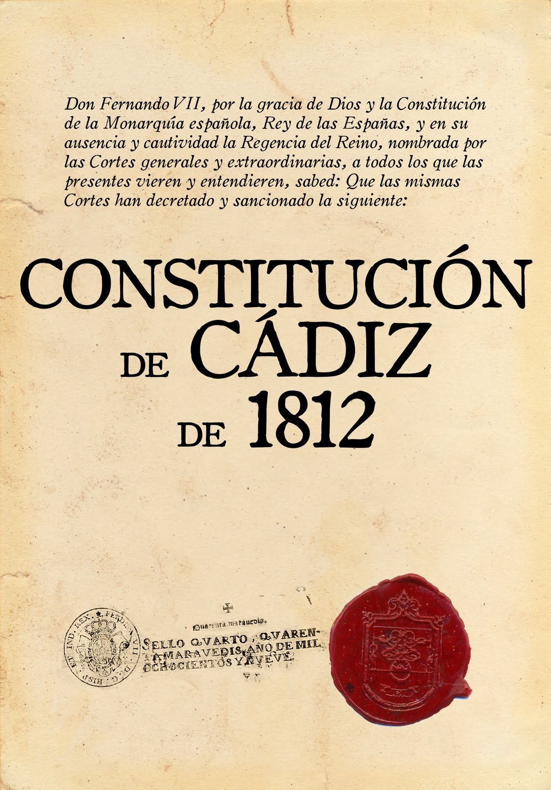

LAS CONSTITUCIONES ESPAÑOLAS
¿Qué es una Constitución?
El diccionario de la Real Academia de la Lengua Española (RAE) define la Constitución como “la ley fundamental de un Estado, con rango superior al resto de las leyes, que define el régimen de los derechos y libertades de los ciudadanos y delimita los poderes e instituciones de la organización política”. Siguiendo esta conceptualización, es posible señalar que al hablar de Constitución se hace referencia a la norma jurídica –escrita o no– más importante de un Estado. En efecto, la Constitución es la norma con más alto rango jerárquico dentro de un ordenamiento jurídico, cuyo objetivo es regular el poder estatal y, también, las libertades fundamentales que se reconocen a las personas que forman parte de ese Estado. Así, la Constitución busca establecer la regulación política y administrativa, instaurando la separación de los poderes del Estado, reconociendo la soberanía nacional, disponiendo las instituciones de la organización política, así como la relación entre ellas, al mismo tiempo que persigue reconocer los derechos fundamentales (también llamadas libertades públicas) de las personas. En términos simples, una Constitución es la norma fundamental de carácter estructural que permite organizar a un Estado, siendo la guía que orienta su gobernación. Esta norma es también conocida bajo las expresiones de “Carta Magna”, “Carta Fundamental”, “Ley Suprema”, “Ley Superior” o “Código Político”.
